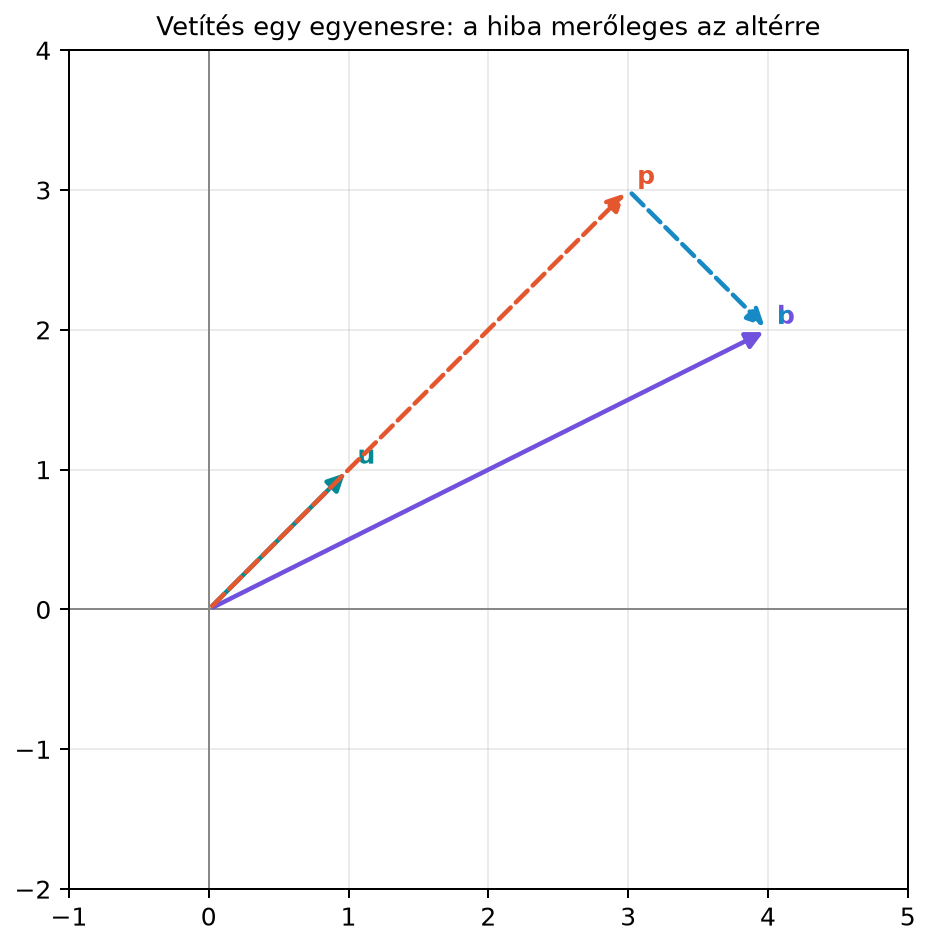

A 4.4. alfejezet (Vetítés egy vektor
irányára) megtanultuk, hogyan bontsunk fel egy vektort egy adott
egyenessel párhuzamos és arra merőleges részre. A gépi tanulásban és a
mérési adatok elemzésében azonban a modellünk ritkán egyetlen irány,
sokkal gyakrabban egy többdimenziós altér. Például egy lineáris modell
magyarázó változói egy mátrix oszlopai által kifeszített oszlopteret
alkotnak, és a megfigyelt célvektor általában nem fekszik pontosan ebben
az altérben. A kérdés ugyanaz, mint az egyenes esetében: hogyan találjuk
meg az altérnek azt a pontját, amely a legközelebb van a megfigyelt
vektorhoz? Ebben az alfejezetben ezt a feladatot oldjuk meg, és eljutunk
a projekciós mátrix (projection matrix) fogalmához.
11.3.2 Szemléletes kép
Először nézzük meg a 2D-s analógiát, amikor az altér egydimenziós. Az
ábrán az
irányú egyenesre vetítjük a
vektort.

Vetítés egy egyenesre: a hiba merőleges
az altérre - Illusztráció 2D-ben: az u irányú egyenesre vetítjük b-t; p
a vetület, r a hibavektor, amely merőleges u-ra. A 3D-s példában ugyanez
az elv egy síkra vonatkozik.
A
vektort felbontottuk egy
vetületre és egy
hibavektorra, ahol
az egyenesen fekszik,
pedig merőleges az egyenesre. A rajzon
,
,
és valóban
A 3D-s példánkban ugyanez az elv érvényes, csak az altér nem egy
egyenes, hanem egy origón átmenő sík. A legközelebbi pont akkor adódik,
ha a hibavektor merőleges a sík minden vektorára.
11.3.3 Definíció
Legyen
olyan mátrix, amelynek oszlopai lineárisan függetlenek, azaz
teljes oszloprangú. Az oszlopok által kifeszített altér a
oszloptér. Egy
vektorhoz keresünk egy
vektort, amely minimalizálja a
távolságot.
Definíció. A
mátrixot a
altérre vetítő projekciós mátrixnak nevezzük. Ekkor a
vektor vetülete
A
mátrix azért vetítő, mert bármely
-re
a képe a
altérben fekszik, és a
hibavektor merőleges erre az altérre.
11.3.4 Kidolgozott példa: vetítés
egy ferde síkra
-ban
Legyen az altér az a sík, amelyet az
vektorok feszítenek ki. Ez nem az
-sík,
hanem egy ferde sík: az
az
-tengely,
az
pedig az
és
tengelyek között átlós irány. A mátrix és a vetítendő vektor:
Először kiszámítjuk a
mátrixot:
Az oszlopok valóban függetlenek, ezért a mátrix invertálható:
A normálegyenlet jobb oldala:
Ezért az együtthatóvektor:
A vetület tehát
A hibavektor:
Ellenőrizzük a merőlegességet az oszlopokra:
A hiba tehát merőleges a sík minden vektorára, hiszen ha a két
bázisvektorra merőleges, akkor azok minden lineáris kombinációjára is
merőleges.
A projekciós mátrixot is kiszámíthatjuk:
Valóban,
11.3.5 Indoklás: honnan jön a
projekciós mátrix?
Állítás. Legyen
teljes oszloprangú mátrix. A
vektorhoz a
altér legközelebbi pontja egyértelmű, és olyan
alakban írható, amelyre a hibavektor merőleges a
altérre.
Bizonyítás. Először azt mutatjuk meg, hogy ha a hiba
merőleges a
altérre, akkor valóban
a legközelebbi pont. Legyen
tetszőleges. Ekkor
A
vektor az altérben fekszik, mert
és
is ott van. A
vektor pedig a feltétel szerint merőleges az altérre, tehát a két tag
merőleges egymásra. A Pitagorasz-tételből:
Ez azt jelenti, hogy
valóban a legközelebbi pont; egyenlőség csak
esetén áll fenn, ezért a legközelebbi pont egyértelmű. A merőlegességi
feltételt mátrixalakban így írhatjuk: a hiba merőleges az
minden oszlopára, azaz
Átrendezve kapjuk a normálegyenletet:
Mivel
teljes oszloprangú, az
mátrix invertálható. Ennek belátásához tegyük fel, hogy
.
Ekkor
így
.
Mivel az oszlopok függetlenek,
.
Tehát a homogén rendszernek csak a triviális megoldása van, ami
négyzetes mátrixnál pontosan azt jelenti, hogy az inverz létezik.
Ezért
és a vetület
Így kapjuk a
projekciós mátrixot.
A projekciós mátrix tulajdonságai. A
mátrixra igaz, hogy
Az első tulajdonságot idempotenciának nevezzük, és azt
fejezi ki, hogy ha egy vektort már levetítettünk, a vetületet újra
vetítve nem változik semmi. A második tulajdonság azt mondja, hogy
szimmetrikus. Mindkettő levezethető:
és
Mivel
szimmetrikus, az inverze is szimmetrikus, tehát
,
és így
.
Ha az
oszlopai ráadásul ortonormáltak (ilyenkor a mátrixot
-val
jelöljük), akkor
,
így a projekciós mátrix jelentősen egyszerűsödik:
Ebben az esetben az együtthatóvektor is közvetlenül számítható:
így a vetület
.
A hibavektor mindig merőleges a
altérre, ami geometriailag azt jelenti, hogy
-t
két, egymásra merőleges részre bontottuk: az egyik az oszloptérben, a
másik a hozzá tartozó ortogonális komplementerben, vagyis a bal
nulltérben
fekszik.
11.3.6 Számítógépes ellenőrzés
NumPy-val
Az alábbi kód reprodukálja a ferde síkra vetítés példáját. A példa
jól kondicionált, ezért a bemutatáshoz a normálegyenletet
solve-val oldjuk meg; ez itt szemléltetés, nem általános
numerikus javaslat. Általános esetben np.linalg.lstsq, QR-
vagy SVD-alapú megoldó használandó, mert a normálegyenlet a
kondíciószámot négyzetre emeli. Magát a projekciós mátrixot a képlet
szerint, az inverzzel is kiszámítjuk az ellenőrzés kedvéért.
import numpy as npA = np.array([[1, 0], [0, 1], [0, 1]])b = np.array([2, 1, 5])ATA = A.T @ AATb = A.T @ b# Jó kondíciójú szemléltetés: normálegyenlet solve-valx_hat = np.linalg.solve(ATA, ATb)p = A @ x_hatP = A @ np.linalg.inv(ATA) @ A.Tprint("x̂ =", x_hat)print("p =", p)print("P =", P)print("P @ b == p:", np.allclose(P @ b, p))print("P @ P == P:", np.allclose(P @ P, P))print("P.T == P:", np.allclose(P.T, P))r = b - pprint("hiba =", r)print("Merőleges az oszlopokra:", np.allclose(A.T @ r, np.zeros(2)))
Várt kimenet:
x̂ = [2. 3.]
p = [2. 3. 3.]
P = [[1. 0. 0. ]
[0. 0.5 0.5]
[0. 0.5 0.5]]
P @ b == p: True
P @ P == P: True
P.T == P: True
hiba = [ 0. -2. 2.]
Merőleges az oszlopokra: True
11.3.7 Tipikus hibák és
félreértések
Az együtthatóvektor nem azonnal
.
Gyakori félreértés, hogy a vetületet
alakban számítják. Ez csak akkor igaz, ha
oszlopai ortonormáltak. Általános esetben a
tényezőre is szükség van, mert az oszlopok nem feltétlenül egységnyi
hosszúak és nem feltétlenül merőlegesek.
A
tényező „szétbontása”. Csábító az egyszerűsítés
,
de ez hibás: a nem négyzetes
-nak
nincs inverze, a
szabály pedig csak invertálható négyzetes tényezőkre érvényes. (Ha
négyzetes és invertálható, akkor valóban
,
hiszen ekkor
az egész tér.) A mátrixszorzás nem kommutatív, ezért a tényezők
sorrendje sem cserélhető fel.
A projekciós mátrix mérete
.
Mivel a vetítés az
térben történik, a
mátrix mérete megegyezik a
vektor méretével. Az
mátrix mérete
,
de a
ennél nagyobb is lehet.
11.3.8 Feladatok
Fogalmazd meg saját szavakkal, miért éppen a merőlegességi
feltétel adja a legközelebbi pontot a
altérben! Melyik egyenletet kapjuk ebből?
Legyen
Számítsd ki kézzel az
együtthatóvektort, a
vetületet, a
hibavektort és a
projekciós mátrixot!
NumPy-ban ellenőrizd, hogy az
mátrixhoz tartozó projekciós mátrixra valóban teljesül
és
.
Válassz egy tetszőleges
vektort, és ellenőrizd, hogy a hiba merőleges az
oszlopaira!
Tegyük fel, hogy
oszlopai ortonormált bázist alkotnak a
altérben. Vezesd le, hogy ekkor a projekciós mátrix
,
és az együtthatóvektor
.
Miért kényelmes ez a helyzet a gyakorlatban?
11.3.9 Megoldások
Ha a hibavektor nem lenne merőleges az altérre, akkor lenne egy
altérbeli komponense, amelyet levonva még közelebb kerülhetnénk a
célvektorhoz. A merőlegesség tehát szükséges feltétele a minimális
távolságnak. A feltételből az
normálegyenletet kapjuk.
Az
oszlopai az
és
egységvektorok, tehát a
altér az
-sík.
Ekkor
Így
,
a vetület
a hiba
A projekciós mátrix
Egy lehetséges NumPy-megoldás:
import numpy as npA = np.array([[1, 2], [2, 1], [1, 0]])b = np.array([4, 3, 1])ATA = A.T @ AP = A @ np.linalg.inv(ATA) @ A.Tprint("P @ P == P:", np.allclose(P @ P, P))print("P.T == P:", np.allclose(P.T, P))r = b - P @ bprint("A.T @ r == 0:", np.allclose(A.T @ r, np.zeros(2)))
Várható kimenet:
P @ P == P: True
P.T == P: True
A.T @ r == 0: True
Ha a
oszlopai ortonormáltak, akkor
.
A projekciós mátrix általános képletébe helyettesítve
Az együtthatóvektor
Ez azért kényelmes, mert nem kell lineáris egyenletrendszert
megoldani: a vetület közvetlenül a skalárszorzatokból számítható,
hasonlóan az egydimenziós esethez.
11.3.10 Rövid összefoglaló
Egy
vektor legközelebbi pontját a
oszloptérben a projekciós mátrix adja meg. A megoldáshoz a hibavektornak
merőlegesnek kell lennie az altérre, amiből az
normálegyenlet következik. Ha
teljes oszloprangú, az együtthatóvektor egyértelmű, és a projekciós
mátrix
.
Ez a mátrix idempotens és szimmetrikus, azaz
és
.
Ortonormált bázis esetén a képlet
alakra egyszerűsödik. A hibavektor mindig merőleges az oszloptérre.